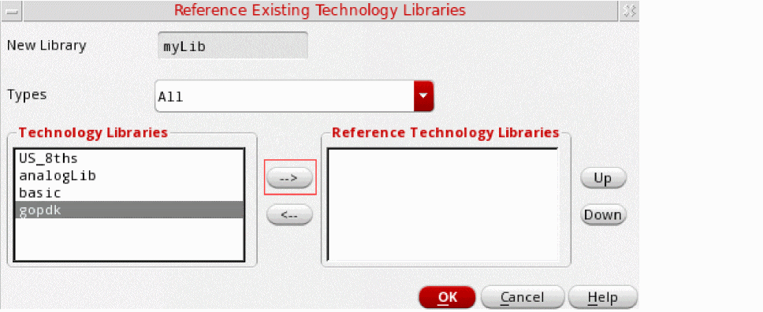
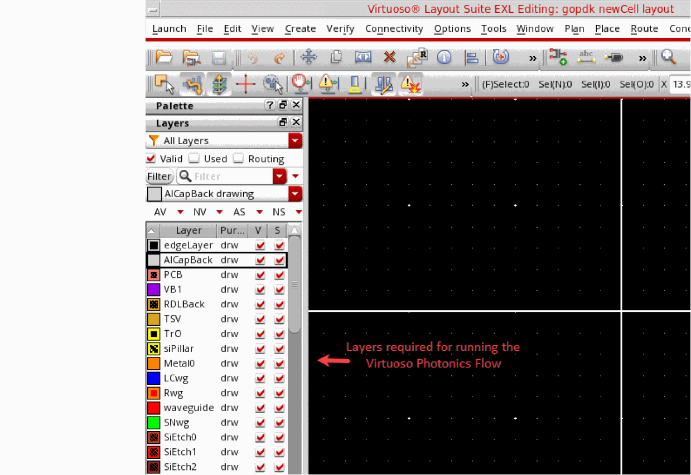
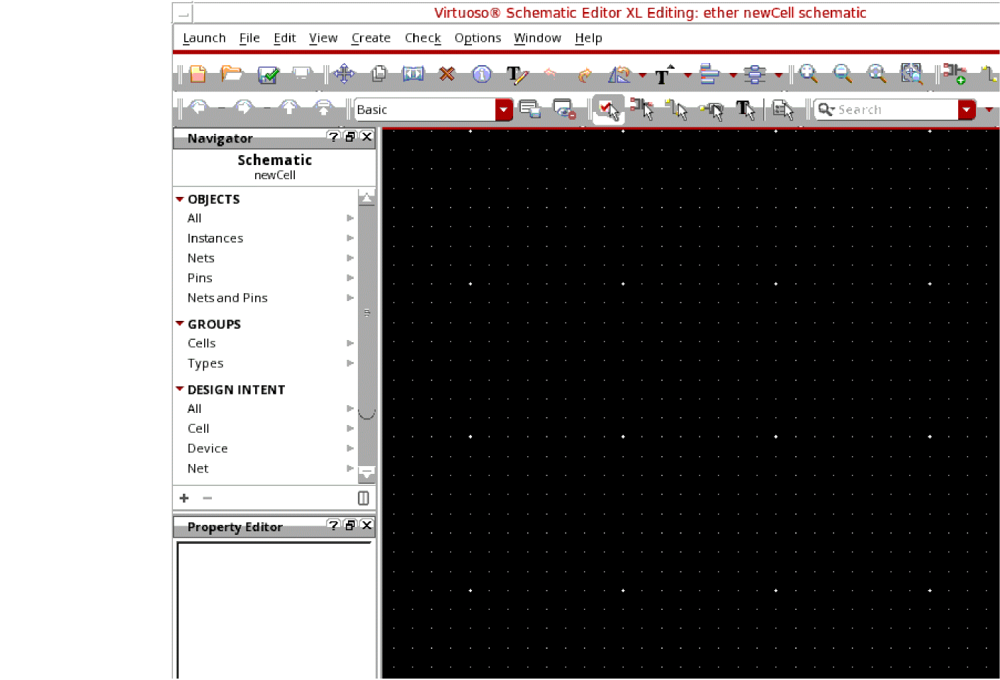
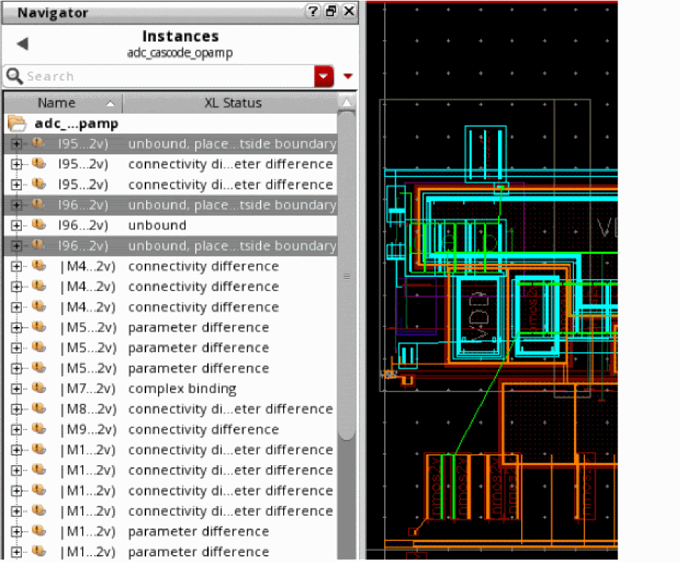
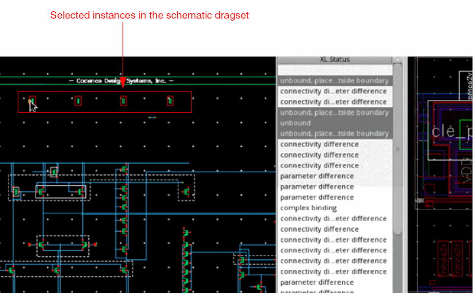
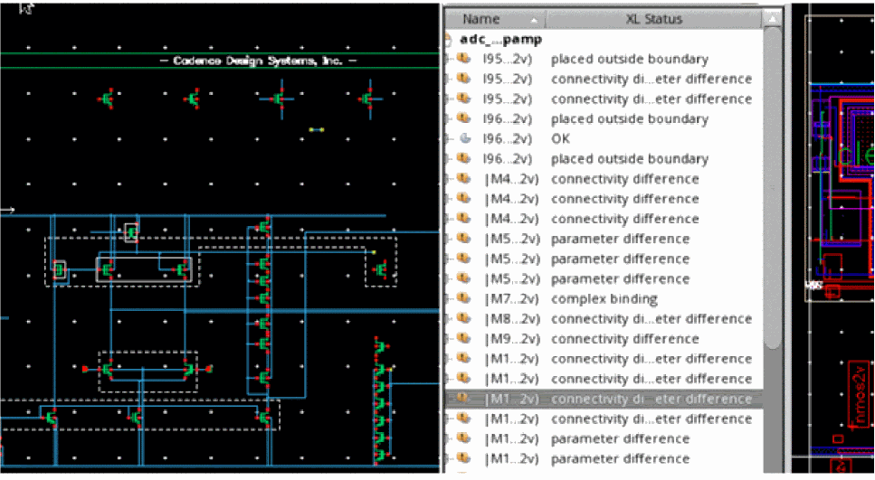

2
Using EPDA in the Virtuoso Environment
The unified Electronics-Photonics Design Environment (EPDA) framework is built upon the Virtuoso® Design Framework, leveraging the three core applications of the design framework—Virtuoso® Schematic Editor, Virtuoso® Analog Design Environment, and Virtuoso® Layout Suite. To enable a true co-simulation methodology within the Virtuoso Studio, the EPDA framework supports optical signal simulation in Cadence® Virtuoso® Analog Design Environment using the Lumerical® Interconnect Photonic Integrated Circuit (PIC) simulator. For more information about the Lumerical PIC simulator, visit the
The key advantage of using the EPDA framework for running the Virtuoso® Photonics® Solution is that Virtuoso supports the integration and implementation of optical signals largely in the same way as that for electrical signals. This makes it easy for both existing and new users to use Virtuoso for creating their electro-optical designs.
Specifying Technology Information
To enable the generation and update of optical pins, you can update the technology file to define an additional constraint group—virtuosoDefaultOpticalPinSetup.
If specified, the virtuosoDefaultOpticalPinSetup constraint group defines the optical layers to use for generating and updating the optical pins. You can use the opticalPinSetup environment variable to specify the name of the constraint group to use for optical pin generation.
virtuosoDefaultElectricalPinSetup constraint group to specify the electrical layers to use for generating and updating electrical pins. To control the constraint group to use for electrical pin generation, use the electricalPinSetup environment variable.
If the virtuosoDefaultOpticalPinSetup or the virtuosoDefaultElectricalPinSetup constraint group is not defined, Virtuoso uses the validLayers defined in the default Layout EXL constraint group—virtuosoDefaultSetup—for pin generation.
Launching Virtuoso in Photonics Mode
Depending on whether or not you already have the Virtuoso licenses available, you can launch Photonics using one of the following licensing options:
Launching the Virtuoso Photonics Option
If you already have access to the Virtuoso design environment, you can invoke the additional Photonics capabilities supported in Virtuoso by using the Virtuoso Photonics Option (VPO) license.
To check out the Virtuoso Photonics Option license, set the following shell environment variables:
setenv Virtuoso_Photonics_Option t
setenv Virtuoso_MultiTech t
Launching the Virtuoso Photonics Platform
If you do not already have a dedicated license to access the Virtuoso design environment, you can check out a single, platform-level license called the Virtuoso Photonics Platform (VPP). This license enables all the Virtuoso design environment capabilities required for running the Photonics solution in addition to enabling the Virtuoso Photonics Solution.
To check out the Virtuoso Photonics Platform license, set the following shell environment variable:
setenv Virtuoso_Photonics_Platform t
Verifying the Photonics License
To verify whether the required Virtuoso Photonics Solution licenses are checked out and that the EPDA framework is being enabled, check that the Command Interpreter Window (CIW) issues the confirmation messages as highlighted in the screenshot below. The CIW is the first window that opens when a Virtuoso session is launched.
CDS.log in the home directory.Related Information
Generating Layout
In Virtuoso, you can use the Virtuoso Suite EXL layout editor (Layout EXL) to generate a single layout that allows you to define an initial placement of the electrical and optical components in the design.
This sections covers the following topics.
- Opening the Library Manager
- Creating a New Library
- Creating a New Library Cellview
- Creating a Schematic Cellview
- Creating a Schematic Cellview
- Creating a Layout Cellview
- Specifying the Components to be Generated
- Specifying the I/O Pins to be Generated
- Defining the Optical Pin Attributes
Opening the Library Manager
All elements of a Virtuoso design—symbols, schematics, and layouts—belong to a library. Virtuoso can support several libraries simultaneously and a Virtuoso designer often works in a design library, which references a given fabrication process and uses the elements recommended for that process. Such a library is called a process library and it contains technology definitions in addition to containing information about basic devices. Optionally, a designer can use additional design elements from another library, called the reference library.
Virtuoso also supports some generic, process-independent libraries, such as basic and analogLib, which include common design elements.
To access the various libraries, you can open the Library Manager form in stand-alone mode from an xterm or a command line window or within the Virtuoso design environment using the CIW.
To open the Library Manager in standalone mode:
The Library Manager appears as a stand-alone application, which is not integrated in the Virtuoso design environment.
To open the Library Manager in Virtuoso Design Environment:
The Library Manager form is displayed in the Virtuoso design environment as displayed in the figure.
Related Information
Creating a New Library
In Virtuoso, you can create a new library using one of the following methods:
Creating a New Library using the Library Manager
To create a new library using the Library Manager:
-
In the Library Manager, choose File – New – Library.
Alternatively, you can click inside the Library list box and pressCtrl+Non the keyboard.
You can also type the name of the library in the Library field and pressCtrl+Nto open the New Library form. In this case, the Name field in the New Library form is automatically populated with the name that you have entered in the Library field.
The New Library Form is displayed. -
In the Name field, type the name of the library you want to create.
The new library name cannot be the same as another library. -
The Directory navigation tools (list boxes and toolbar buttons) to specify the destination directory in which you want to create the new library. You can also type a directory path in the Directory field.
You must have permission to edit the directory in which you want to create a library.If you want the library to be under design management control, you must create it in a managed project area. For additional information about creating managed libraries, see the Virtuoso Software Licensing and Configuration Guide. -
(Optional) In the Design Manager group box, specify whether you want to use a design management system.
- If you want to use a design management system, select Use <design management system> (the default).
-
If you do not want to use a design management system, select Use No DM.
- You can select the Compression Enabled check box to write OpenAccess data to this library in a compressed format. For more information, see Compressing a Library Using Library Manager.
-
Click OK.
The Technology File for New Library form is displayed. -
Choose the Reference existing technology libraries technology file options.
For more information about the various technology files options, see Technology File for New Library Form.
For more information about technology files, see the Virtuoso Technology Data User Guide.
Creating a New Library Using the CIW
To create a new library using the CIW:
-
From the CIW, select File – New – Library.
The New Library form is displayed. - Enter a Name for your new library.
-
(Optional) Choose the name of the Directory (non-library directories) that you want to store your library in. Otherwise, you can specify the library path in the text box under the Directory (non-library directories) section.
-
Choose the Reference existing technology libraries technology file options.
For more information about the various technology files options, see Technology File for New Library Form..
For more information about technology files, see the Virtuoso Technology Data User Guide. -
In the Reference Existing Technology Libraries form, double-click the gopdk library in the left column to move it to the right column.
Alternatively, you can move items from one column to the other by selecting the item and then clicking the appropriate arrow key to specify the direction of move.
The new library is created. - Create a new layout cellview to verify if you have referenced the appropriate technology. See Creating a Layout Cellview.
- In the layout cellview opened in Layout EXL, right-click the menu bar and choose Assistants – Palette.
-
The layout cellview displays the Palette assistant, as shown in the figure below. You can use the Palette assistant to verify that the layers required for running the Virtuoso Photonics Flow are supported.

Related Information
Creating a New Library Cellview
-
Open the Library Manager.
-
Choose File – New – Cell View.
Alternatively, you can click inside the Cell or View list box and pressCtrl+Non the keyboard.
The New File form is displayed.
You can also type the name of the cell in the Cell field and pressCtrl+Nto open the New File form. In this case, the Cell field in the New File form is automatically populated with the name that you have entered in the Cell field of the Library Manager form. - In the Library drop-down list, choose the name of the library in which you want to create a new cellview.
- In the Cell field, type a cell name for the new cellview.
- In the View field, type a view name for the new cellview.
- In the Type drop-down list, choose the type of view to be opened.
- In the Application section, select Layout EXL.
- (Optional) Select Always use this application for this type of file to always open the selected application when the selected view type is opened.
- Click OK.
The new cellview opens in the selected application.
Related Information
Creating a Schematic Cellview
In Virtuoso, the schematic representation of the design forms the starting point for a design. As in the electrical flow, the schematic is also used to launch the circuit simulation and to generate a layout in the Virtuoso Photonics Flow. You can also update the schematic based on any design decisions made during the simulation or layout generation. After the layout updates have been backannotated to the schematic, you can use the updated schematic to run any verification checks. Therefore, it is important to create a good schematic design that can serve all these purposes and help generate a connectivity-driven, correct-by-construction layout. For more information on creating schematics in Virtuoso, see the
To launch the Virtuoso Schematic Editor to create a new schematic cellview:
-
Open the Library Manager.
-
Choose File – New – Cell View.
Alternatively, you can click inside the Cell or View list box and pressCtrl+Non the keyboard.
The New File form is displayed. -
In the Library drop-down list, choose the name of the library in which you want to create a new cellview.
If you have created any new libraries, they should be available in the list. - In the Cell field, type a cell name for the new cellview.
- In the View field, type schematic to open the cell in the schematic view.
- In the Type drop-down list, choose schematic.
- In the Application section, choose Schematics XL.
- Select Always use this application for this type of file to always open the selected application when the selected view type is opened.
- Choose the appropriate Open for option.
-
Click OK.
The new cellview opens in the selected application, as shown in the figure below.

Related Information
Opening a Schematic Cellview
To open an existing schematic cellview:
-
Open the Library Manager.
-
Choose File – Open – Cell View. Alternatively, you can click inside the Cell or View list box and press
Ctrl+Non the keyboard.
The Open File form is displayed. -
In the Library drop-down list, choose the name of the library from which you want to open the schematic cellview.
If you have created any new libraries, they should be available in the list. - In the Cell field, type the name of the cell to open.
- In the View drop-down list, choose schematic.
- In the Application section, choose Schematics L.
-
Click OK.
The schematic cellview opens in the Virtuoso Schematic Editor window. If the schematic you opened includes both electrical and optical connections, the schematic editor displays the connections differently.
Related Information
Creating a Layout Cellview
-
Open the Library Manager.
-
Choose File – New – Cell View.
Alternatively, you can click inside the Cell or View list box and pressCtrl+Non the keyboard.
The New File form is displayed. -
In the Library drop-down list, choose the name of the library in which you want to create a new cellview.
If you have created any new libraries, they should be available in the list. - In the Cell field, type a cell name for the new cellview.
- In the View field, type layout to open the cell in the layout view.
- In the Type drop-down list, choose layout.
-
In the Application section, choose Layout EXL.
- Select Always use this application for this type of file to always open the selected application when the selected view type is opened.
- Choose the appropriate Open for option.
-
Click OK.
The new cellview opens in the selected application.
Specifying the Components to be Generated
Use the
For the schematic instances that have layout representations available, the Generate All From Source command creates corresponding layout views in the canvas.
To specify the components to be generated:
- In the Generate Layout form, select the Generate tab.
-
In the Generate group box, select the Instances, I/O Pins, and PR Boundary options, as required.
-
To chain transistors, select the Chain check box.
For information on chaining optical pins, see Generating Optical Chains. - To stop Layout EXL from generating layout pins for global nets in the schematic, select Except Global Pins.
-
To chain transistors, select the Chain check box.
- To preserve any user-defined binding of devices between the schematic and the layout, select Preserve User-Defined Bindings.
- Click OK.
Related Information
Specifying the I/O Pins to be Generated
You specify the pins to be generated on the I/O Pins tab of the Generate Layout form.
For each pin listed, the form shows the parameters that will be used to generate its equivalent in the layout. You can remove or change the specification of any of the listed pins, or add new pins to be generated.
When generating pins, Layout EXL uses the same naming convention as the Virtuoso Schematic Editor, allowing you to assign different names to terminals and nets. Where terminal and net names are different in the schematic, Layout EXL creates pins with the same terminal name as in the layout, even though the net name associated with the pin might be different.
Power and ground pins defined at a lower level of the design hierarchy are not listed on the I/O Pins tab but the pins are still generated in the layout view. Virtuoso issues a message in the CIW to notify you about the operation.
Specifying the Default Values for All Electrical Pins
To specify the default values for all electrical pins:
- In the Generate Layout form, select the I/O Pins tab.
-
Select Type as Electrical.
This option is available if the schematic has both electrical and optical pin types defined. -
Choose the default routing layer from the Layer cyclic field.
The list of pin layers is obtained from the technology information applied to the design. - Specify the default Height and Width of the electrical pins and the Number of pins you want to create.
-
Click Apply.
The specified values are applied to all the electrical pins displayed in the list box.
Related Information
Defining the Optical Pin Attributes
When generating optical pins, Layout EXL uses the same naming convention as specified in the Virtuoso Schematic Editor, allowing you to assign different names to ports and nets. Where port and net names are different in the schematic, Layout EXL creates pins with the same terminal name as in the layout, even though the net name associated with the pin might be different.
If a pin is associated with an optical net, Layout EXL automatically generates optical pins on an optical layer, such as the waveguide layer. By default, the layer to be used for the optical pin generation is determined from the value set for the phoPinLayer environment variable. If the environment variable does not have a valid layer set, the first photonic layer in the validLayer list is used.
Each optical pin can have the following attributes defined:
- Width: Width of the waveguide associated with the photonic port.
-
Radius: Curvature of the waveguide associated with the photonic port.
By default, the radius is not defined. - Angle: Access direction of the photonic port.
Generating Optical Pins
To generate an optical pin in the layout:
- In the Generate Layout form, select the I/O Pins tab.
-
Select Type as Optical.
This option is available if the schematic has both electrical and optical pin types defined. -
Choose the default routing layer from the Layer cyclic field.
The default pin layer is determined from the value set for the phoPinLayer environment variable. -
Specify the default Width, Radius, and Input Angle of the pins you want to create.
The default value set for Input Angle applies only to the input pins. The output pins are set to a complementary angle value. - Click Apply to generate the pins in the layout.
Updating Optical Pins
- In the Generate Layout form, select the I/O Pins tab.
-
Select Type as Optical.
This option is available if the schematic has both electrical and optical pin types defined. - Specify the new Layer, Width, Radius, and Angle, as appropriate.
- Click the Update button.
The selected pins are updated.
Generating Selected From Layout
In Virtuoso Layout Suite EXL, if you have the Virtuoso_Photonics_Option license checked out, you can select unbound layout components and generate them in the schematic.
To generate the selected layout components in the corresponding schematic window:
-
In the Layout EXL Navigator assistant, select the instances or terminals that display their XL Status as unbound.
 -
Choose Connectivity – Generate – Selected From Layout.
Alternatively, click the Generate Selected From Layout button on the Layout XL toolbar.
If the corresponding schematic cellview is read-only, a message is issued to prompt that the cellview be made editable.
If the corresponding schematic cellview is editable and the schematic has not already been extracted, a dialog box pops up to ask if the schematic cellview can be extracted. - Press F3 to display the Generate Selected From Layout form to customize how dummies are placed in the schematic. (Optional).
-
Click OK to proceed with the extraction of the schematic cellview.
The selected instances are added to the dragset and are available for placement in the schematic view.
 -
Click anywhere in the schematic canvas to place the selected instances.
The selected instances are placed in a row in the schematic cellview, reflecting their layout connectivity. The XL Status of the instances in the layout view is updated to reflect the current status.

Related Information
Generate Selected From Layout Form
Abutting Photonic Elements
The Virtuoso Photonics Flow supports all the same abutment features for photonic elements as are supported for electronic elements. In addition, the flow allows a type of abutment, which aligns the center point of an optical port with the matching facet information (width, angle, or layer). This enables any-angle abutment support for photonic elements.
For photonic elements, abutment is triggered by overlapping photonics ports, provided the corresponding routing layers in the technology database have been set up to trace optical connectivity.
For photonic layouts, abutment is also enabled for optical pins of non-Pcell devices. If you set the phoAbutNonPcells environment variable to t, Layout EXL also supports the abutment of non-Pcell instances with Pcell instances and other non-Pcell instances. During non-Pcell abutment, top-level pins can abut with instance pins. By default, instance pins on the same pin layer are abutted and aligned at the center.
For photonic designs, waveguide abutment is also supported. However, for waveguide abutment to be possible, the two abutting waveguides must be perfectly aligned and the abutting ports must be on the same net. If the abutting waveguides result in any shorts, the corresponding markers are generated in the
To workaround the following situations that could otherwise prevent abutment, you can set the phoAbutAutoAdjust environment variable to enable abutment.
-
If the optical port is locked and the overlapping instance is at a different angle, setting the
phoAbutAutoAdjustenvironment variable automatically moves and adjusts the instance angle to be compatible with the port to allow abutment. If the port is unlocked and moved towards the instance, the angle of the optical port automatically adjusts to be compatible with the instance to allow abutment. -
If the overlapping optical port differs from the abutting instance in width, setting the
phoAbutAutoAdjustenvironment variable automatically adjusts the width of the port to enable abutment.
Photonics devices can be spaced out in case of abutment failure when the spacing properties
Related Information
Generating Optical Chains
In the EPDA framework, you can use the following Layout XL commands to chain optical waveguide instances:
- Generate All From Source
- Update Components And Nets
- Generate Selected From Source
- Generate Chained Devices
When using Generate All From Source and Update Components And Nets, the layout instances selected for chaining are checked using the phoIsWaveguide SKILL function to verify them as waveguide instances. If the selected instances are found to be waveguides, they are chained during layout generation.
However, when layout generation is being performed using the Generate Selected From Source command, all the connected optical devices are chained. The phoIsWaveguide SKILL function is not used in this case.
You can also chain waveguide instances and top-level photonic pins using the Virtuoso® Layout Suite XL Connectivity – Generate – Chained Devices command or use the context-sensitive Chain menu option. When the selected set includes only waveguide instances and photonic pins, the Chain context-sensitive menu has only the Default option enabled. The other menu options, Top, Center, and Bottom, are disabled in this case.
- Preserve Existing Chains
- Use Device Order
- Interdigitate Chains
- Mirror
- Permute Pins
- Align PMOS
- Align NMOS
Related Information
Composite Waveguide Editor Form
Generating an Incremental Chain
When using the Virtuoso Photonics Solution, you can incrementally create a chain by adding an object to an anchor. An anchor can be an instance or a top-level pin object, or a group of such abutted objects, which retains its position after chaining.
When Incremental chaining is invoked on an anchor, Virtuoso prompts to select an appropriate object for chaining by highlighting the suitable chaining connections on the nets associated with the selected anchor. Select any of the objects connected to the highlighted connections. You can iteratively add instances to the chain until the Incremental chaining command is interrupted by pressing the Esc key.
To incrementally chain instances:
- In the layout canvas or the Navigator assistant, right-click an instance or a group of abutted objects to be used as an anchor.
-
From the shortcut command, choose Chain – Incremental.
All the candidate instances for chaining are highlighted in the layout canvas using probes. -
Select an object to be added to the chain.
The selected object is added to the chain, with the anchor retaining its position. - To add another object to the chain, select the object. Do this iteratively, if more objects must be added to the chain.
- To stop adding more objects to the chain, press the Esc key.
Related Information
Generating an Anchored Chain
When using the Virtuoso Photonics Solution, you can automatically chain instances by adding to a selected set of fixed anchors, using connectivity from the selected set. Anchor chaining allows chains to be created much faster compared to incremental chaining, which requires manually selecting each instance to be added to the chain.
To automatically create an anchored chain:
- In the layout canvas or the Navigator assistant, right-click an instance or a group of instances to be used as an anchor.
-
From the shortcut command, choose Chain – Anchor.
All the candidate instances for chaining are highlighted in the layout canvas using probes.
Editing Layout
Virtuoso Layout Suite EXL provides a lot of editing capabilities to work with electro-photonic layout designs. You can use the layout editor to create custom layouts or edit any existing layout. From supporting basic parameter updates to layout components to enabling editing of composite waveguides, the Virtuoso Layout Suite EXL editor is well-equipped to support the editing of a Virtuoso-enabled Photonic design.
Editing the Layout Parameters
Photonics elements are formed as a result of complex mathematical calculations used to generate shapes. Therefore, these elements are “wrapped” into a generator and can be controlled through parameters. In fact, all the elements, including interconnect elements such as waveguides in a Photonic Integrated Circuit are defined as fixed or Pcell instances that can be controlled using parameters. Electronic circuit designs in Virtuoso, on the other hand, use a different methodology where the interconnects (wires) are often defined as top-level shapes. Because most photonic elements in a Photonic Integrated Circuit can be controlled through parameters, these instances can be interactively controlled using the Property Editor assistant or the Instance Property form.
The Property Editor assistant enables you to view and edit object property values for all electrical and optical components in your design. By default, each property is displayed in a separate table row in the Property Editor.
The Property Editor table in the figure displays the properties for the selected CurvyCore® objects in the design.
For detailed information about the Property Editor user interface, how to work with it and how to edit property values, see
Editing the Composite Waveguides
In the Virtuoso Photonics Solution, Layout EXL enables you to use optical connections called waveguides in your design. When several such optical connections or waveguides are used in a design, the resultant waveguide is called a composite waveguide.
The Virtuoso Photonics Solution supports the generation of such composite waveguides using the
The various ways you can launch the Composite Waveguide Editor in the schematic and layout view are:
-
From the Create Instance form
When creating a composite waveguide instance, click the Ellipses (…) button corresponding to the Edit label displayed just above the Waveguide parameter list. -
From the Property Editor assistant
In the Property Editor assistant, click the Ellipses (…) button corresponding to the Edit label displayed just above the Waveguide parameter list. -
From the Property Editor form
In the Parameters tab of the Property Editor form, click the Ellipses (…) button corresponding to the Edit label displayed just above the Waveguide parameter list.
Editing a waveguide can involve the following:
- Adding a Waveguide Element
- Deleting a Waveguide Element
- Changing the Position of a Waveguide Element
- Adding an Optical Waveguide Connector
- Rotating a Waveguide Element
Adding a Waveguide Element
-
In the layout canvas, select the composite waveguide instance to update.
The Property Editor assistant populates to display the properties of the selected optical instance. -
In the Property Editor assistant, click the Ellipses (…) button corresponding to the Edit label displayed just above the Waveguide parameter list.
The Composite Waveguide Editor displays. -
In the Composite Waveguide Editor, right-click an existing waveguide element to use as the reference and choose Add Before or Add After to specify the position of the element to add.
The Add Element form displays. - Specify the Library, Cell, and View to use for the new waveguide element.
- Click OK to apply the settings and close the editor.
A new waveguide element gets added at the position you specify.
Deleting a Waveguide Element
To delete a waveguide element:
-
In the layout canvas, select the composite waveguide instance to update.
The Property Editor assistant populates to display the properties of the selected optical instance. -
In the Property Editor assistant, click the Ellipses (…) button corresponding to the Edit label displayed just above the Waveguide parameter list.
The Composite Waveguide Editor displays, listing the various waveguide elements that comprise the composite waveguide. -
In the Composite Waveguide Editor, right-click the waveguide element that you want to remove and choose Delete from the context-sensitive menu.
The selected element is removed from the waveguide element list and from the layout canvas. - Click OK to apply the settings and close the editor.
Changing the Position of a Waveguide Element
To change the position of an element in the composite waveguide:
-
In the layout canvas, select the composite waveguide instance to update.
The Property Editor assistant populates to display the properties of the selected optical instance. -
In the Property Editor assistant, click the Ellipses (…) button corresponding to the Edit label displayed just above the Waveguide parameter list.
The Composite Waveguide Editor displays, listing the various waveguide elements that comprise the composite waveguide. - In the Composite Waveguide Editor, right-click the waveguide element for which the position needs to be changed and choose Move Up or Move Down to specify the new position for the element.
The selected element is moved to the new position in the element list. The composite waveguide displayed in the layout canvas also reflects the element at its new position.
Adding an Optical Waveguide Connector
Optical waveguide connectors are complex waveguides that can automatically generate a waveguide layout by using basic input information such as curve type.
- In the layout canvas, select the composite waveguide instances to connect.
-
Right-click and choose Optical Connector from the context-sensitive instance menu.
The Waveguide Connector for Optical Connections dialog box opens. -
From the Connector drop-down list, choose a connector type to use for connecting the selected waveguides.
- Click OK.
An optical connector is created in the layout canvas based on the connector style you selected.
Rotating a Waveguide Element
If a composite waveguide has the rotation parameter set, you can rotate all the elements inside the composite waveguide by the specified rotation value. The rotation of the waveguide elements is determined based on the rotation value set on the individual waveguide elements and the value set on the composite waveguide.
Let us consider that a composite waveguide includes two waveguideStraight elements with rotation on each element set to 0. Let us also assume that the rotation of the composite waveguide is set to 45.
On canvas, both the waveguide elements are rotated by 45 degrees, which puts them at an effective rotation of 45 degrees. If the waveguideStraight elements were set to rotation of 45 and the composite waveguide was set to rotate by 45 degrees, the effective, on-canvas rotation of the waveguideStraight elements will be 90 degrees.
However, when you edit a composite waveguide using the Composite Waveguide Editor, the composite waveguide is considered to be at rotation 0. This allows editing the rotation of the individual waveguide elements without taking into account the rotation of the composite waveguide.
For more information on rotating objects using the Virtuoso Photonics Solution, see
Related Information
Composite Waveguide Editor Form
Managing the Layout Constraints
Use the Constraint Manager assistant to add, modify, check or delete constraints in your design.
The Constraint Manager displays a full set of constraints for a design wherever you are in the design hierarchy and wherever the constraints were created in that hierarchy. It displays the constraints in a logical manner, and shows which constraints are currently met and which have been overridden during the course of the physical implementation.
The Constraint Manager user interface comprises two main component parts: the Constraint Manager table at the top, which lets you browse the constraints in your design and the Constraint Editor underneath it, which lets you change the values of one or more selected constraints.
For more information on the Constraint Manager toolbar, see
Routing Layout
To complete the electrical routing, Virtuoso supports the use of assisted routing for Virtuoso Photonics Solution.
To run the assisted router, you can use the options available in the Virtuoso Space-based Router toolbar.
Notice the Lidar icon in the Virtuoso Space-based Router toolbar, which has been introduced to set the required Wire Editing capabilities for Photonic Integrated Circuits. Virtuoso supports automatic routing for photonic designs, following the same rules as defined for the electrical layers.
For more information on how to use the various advanced routing capabilities of the Virtuoso Space-based Router to plan an efficient routing run for the Photonic Integrated Circuit, see the Virtuoso Space-based Router User Guide.
Verifying Design
Checking a Layout Against a Schematic
To check the components in your layout view against the schematic view:
-
From the layout window menu bar, choose Connectivity – Check – Against Source.The Check Against Source command is also available through the Check Against Source icon () in the Layout XL toolbar.The Check Against Source form is displayed.
- In the Check group box, choose the differences you want to report.
- In the Output group box, choose whether you want to open the CAS workspace or the Info window, or both, and specify whether you want to overwrite the log file from a previous CAS run, or append the results to the log file.
- Specify the name of the log file in which the report of the CAS run can be logged.
-
Click OK to run the check.
The schematic is extracted and the CAS report is generated and displayed based on the Output options that you selected. - In the Info window, choose File – Save As to save the report to an ASCII file.
Related Information
Checking XL Compliance
To check if your design fulfills the compatibility criteria that allow it to fully leverage the connectivity-driven features of Virtuoso Layout Suite EXL, run the Connectivity – Check – XL Compliance command.
The XL Compliance check evaluates the design for device correspondence with the schematic and reports information about ungenerated and unbound devices, if any. The report is intended to help you resolve any XL-compliance issues beforehand so that you can take full advantage of the numerous connectivity-driven capabilities provided by Layout EXL for optimal layout generation.
Related Information
Return to top